Թեստ 43
30:00
1. «Ճանապարհային երթևեկության անվտանգության ապահովման մասին» ՀՀ օրենքի համաձայն` միջազգային վարորդական վկայականները տրվում են`
2. «Ճանապարհային երթեւեկության անվտանգության ապահովման մասին» ՀՀ օրենքի համաձայն՝ «B» եւ «C» կարգերի տրանսպորտային միջոցներ վարելու իրավունքի վկայական կարող է տրվել՝
3. Տրանսպորտային միջոցների շահագործումն արգելվում է, եթե՝
4. Տրանսպորտային միջոցների շահագործումն արգելվում է, եթե
5. Ո՞ր տրանսպորտային միջոցի վարորդն ունի առաջնահերթ երթևեկության իրավունք տվյալ իրավիճակում:
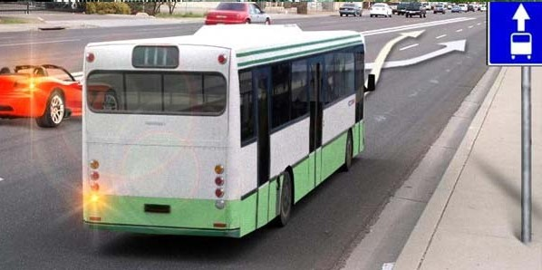
6. Ո՞ ր նշանի ազդեցությունը չի տարածվում ընդհանուր օգտագործման տրանսպորտային միջոցների վրա:
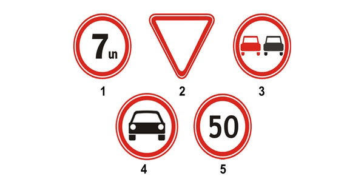
7. Հետընթաց վարմամբ բակի մուտքն օգտագործելով հետադարձ կատարելն այս իրավիճակում
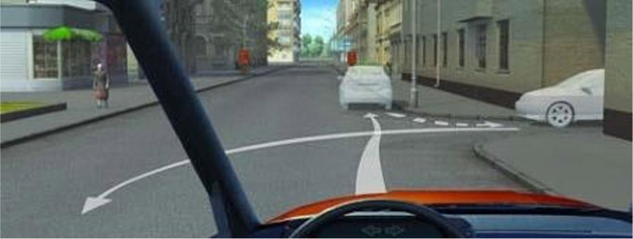
8. Կանգառ կատարել նշված վայրում
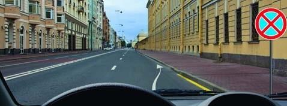
9. Մյուս խաչմերուկում նշվածներից ո՞ր ուղղությամբ կարող եք շարունակել երթևեկությունը
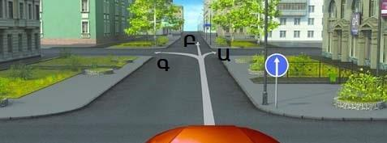
10. Այս իրավիճակում զիջել ճանապարհը պարտավոր ենք
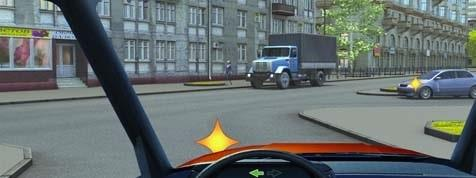
11. Պարտավոր եք արդյո՞ք զիջել ճանապարհը ավտոբուսին
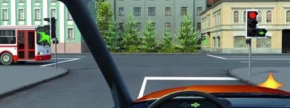
12. Ո՞ր ավտոմոբիլը վերջինը կանցնի խաչմերուկը:
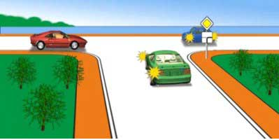
13. Լուսացույցի ի՞նչ ազդանշանի դեպքում ավտոմոբիլի վարորդը կարող է ավարտել հետադարձը:
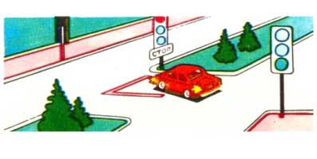
14. Թույլատրվում է արդյոք մուտք գործել սպիտակ լայն գծերով գծանշված կղզյակ:
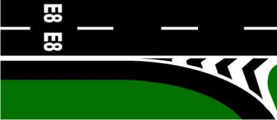
15. Թույլատրվու՞մ է արդյոք ճկուն կամ կոշտ կցիչով քարշակման դեպքում մարդկանց փոխադրումը քարշակվող մեխանիկական տրանսպորտային միջոցում:
16. Այս եռանկյունաձև գծանշումը տեղեկացնում է
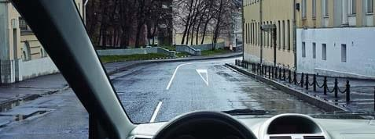
17. Վազանց կատարելիս ձախ շրջադարձի լուսային ցուցիչը անջատել պարտավոր ենք
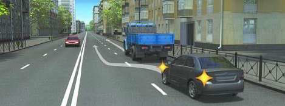